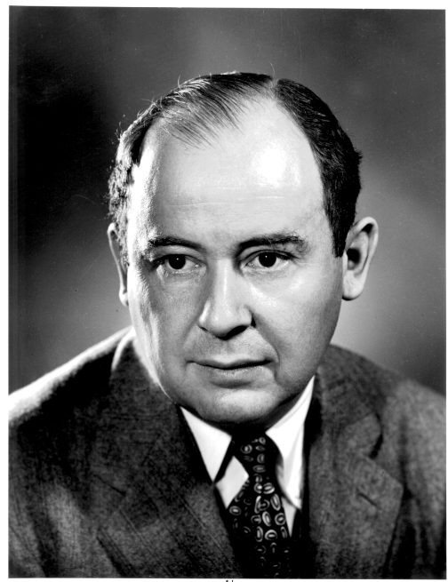
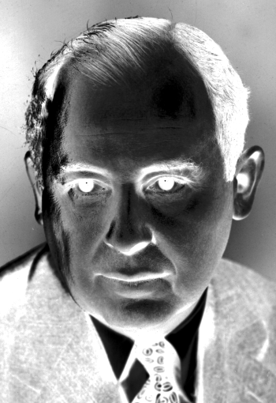
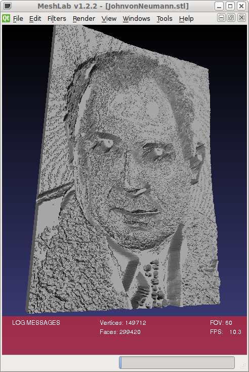
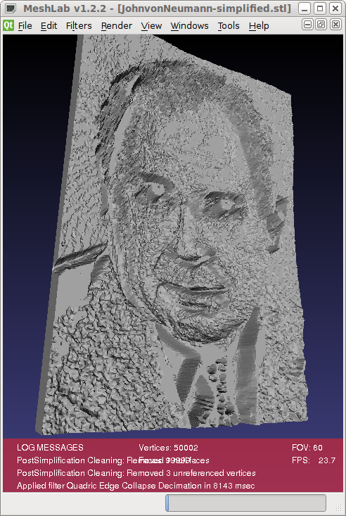
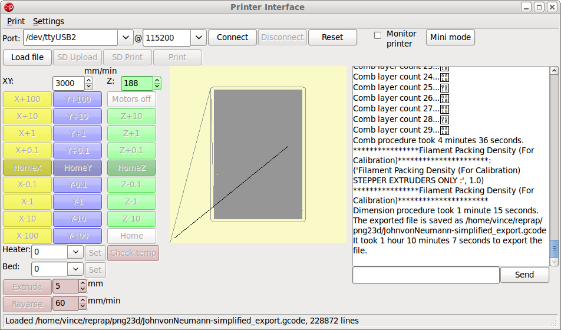
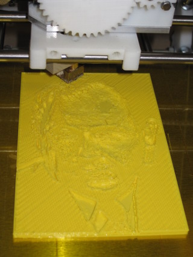
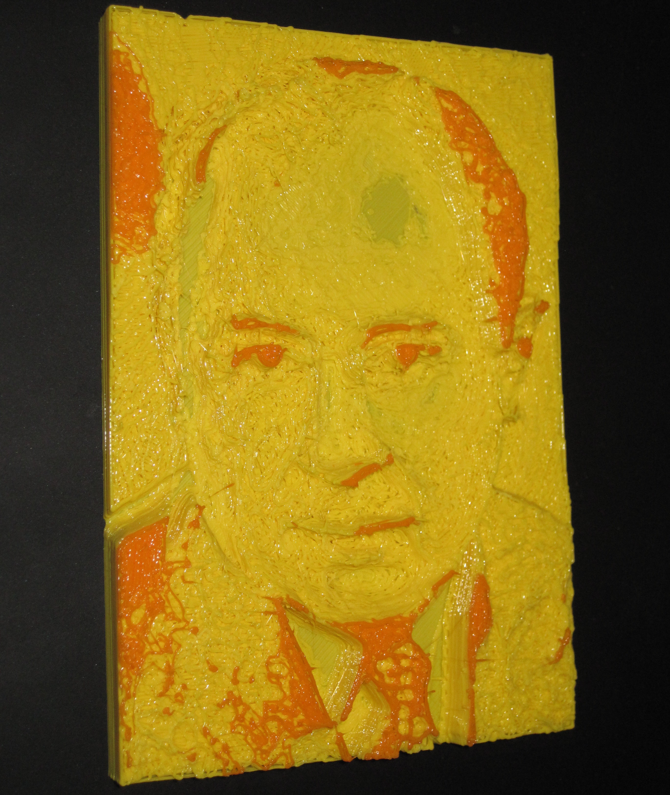
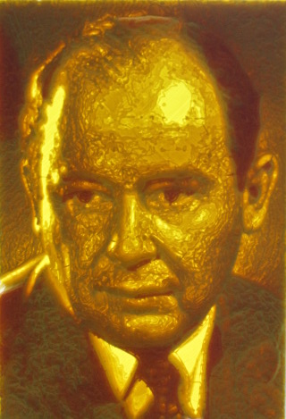

by kyllikki
by kyllikki
Lithophane of John von Neumann
This example shows how to produce a Lithophane of John von Neumann and shows a physical print of the result.
This example uses a different mesh generation type to the previous Alan Turing Lithophane and seems to produce a better overall result.
I decided the output would be 100mm wide and 25 layers deep (10mm with 0.4mm layers) as that seemed to keep the mesh complexity to reasonable values. I therefore needed an image approximately 200-300pixels wide and of suitable contrast.
An image of John von Neumann was obtained from the Los Alamos National Laboraty (LANL) via wikimedia.
{kind=link}

A simple imagemagick command line was constructed to convert to greyscale, crop and finally invert the image.
The commandline was combined with the png23d invocation with the settings for 25 levels, width of 100 and depth of 9.6 as already determined to genrate a suitable STL file.
$ convert JohnvonNeumann-LosAlamos.gif -quantize GRAY -dither none -colors 256 -negate \ -crop 350x510+90+60 +repage png:- | ./png23d -v -t x -f surface -o stl -l 25 -d 9.6 -w 100 \ - JohnvonNeumann.stl Reading from png file "-" Writing output to "JohnvonNeumann.stl" Generating binary STL Generating mesh from bitmap of size 350x510 with 25 levels Indexing 2152320 vertices Simplification of mesh with 717440 facets using 2152320 unique verticies Bloom filter prevented 358165 (16%) lookups Bloom filter had 557 (0%) false positives Indexing required 1794155 lookups with mean search cost 511 comparisons Result mesh has 299420 facets using 358722 unique verticies width bitmap:350 output:100.000000 width scale is 1:0.285714 height bitmap:25 output:9.600000 height scale is 1:0.384000 Writing Binary STL output Completed in 6s
The result was loaded into meshlab to inspect the generated mesh.
Although usable in this form the mesh still has almost 300,000 faces and would take an excessive time to run through skeinforge. To reduce the complexity the meshlab quadratic decimation filter was applied to reduce the face count to 100,000. The weighted simplification had to be ommited as with it enabled, after 48 hours the simplification still had not completed.

The simplified mesh was still acceptable quality.
The STL file was loaded into the Printrun project tool Pronterface which automatically ran skeinforge on the file to layer slice the input.
My printer settings have a 0.4mm layer height which produced should have generated 25 layers for the 10mm depth of output, in fact 29 layers were generated. The slicing procedure took 70minutes 7seconds to complete.
The print itself took three hours twenty minutes to complete, using around 8 metres of 3mm filament, resulting in a successful lithophane.
{kind=link}
I did not have any white filament, nor enough of a single colour so the result is unfortunately in yellow and the last 6% (2 layers) in orange.
{kind=link}
Contrary to previous thoughts the best viewing results for these coloured PLA lithophanes, especially for photography, are obtained by strong backighting of the flat side combined with good lighting from the front side, this gives the intended feeling of depth and a much more appealing effect. This also removes the need to horizontaly flip the image to obtain the original composition.
{kind=link}
In conclusion the png23d tool worked as required and generated a usable result. It also seems 10mm is still too thick and probably 8mm would suffice. It would also appear preferable to have a source image with a light background or contrast between the face and background is lost.